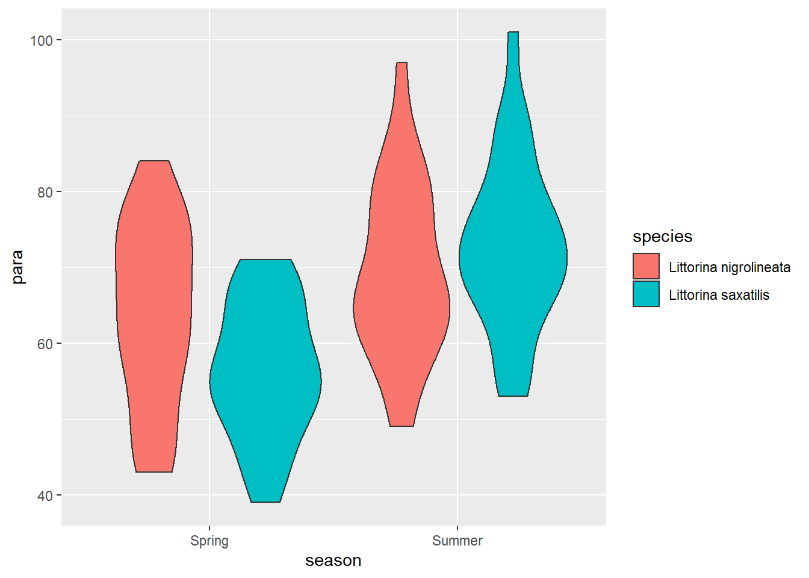

Chapter 7 Two-way ANOVA revisited
In this chapter we turn our attention to designs with two categorical explanatory variables. We first use the familiar aov() function to carry out a two-way ANOVA and then use our understanding to help us interpret the output of lm(). We will also make predictions from the model and report on our results.
7.1 Introduction to the example
A group of amateur conchologists have collected live specimens of two species of rough periwinkle (intertidal, gastropod molluscs) from sites in northern England in the Spring (1) and Summer (2). Among other variables, they take a measure of the gut parasite load. Number of parasites is related to the number of parasites seen on a slide of gut contents and larger numbers indicate a higher parasite load. The data are in S periwinkle.txt.
Do a quick plot of the data. We have two explanatory variables: one can be mapped to the x-axis and the is mapped to a different aesthetic. We have used fill.

peri_summary <- periwinkle %>%
group_by(season, species) %>%
summarise(mean = mean(para),
sd = sd(para),
n = length(para),
se = sd / sqrt(n))| season | species | mean | sd | n | se |
|---|---|---|---|---|---|
| Spring | Littorina nigrolineata | 63.8 | 11.92 | 25 | 2.38 |
| Spring | Littorina saxatilis | 56.5 | 8.88 | 25 | 1.78 |
| Summer | Littorina nigrolineata | 69.4 | 11.44 | 25 | 2.29 |
| Summer | Littorina saxatilis | 72.9 | 11.24 | 25 | 2.25 |
7.2 aov() output reminder
summary(mod)
# Df Sum Sq Mean Sq F value Pr(>F)
# season 1 3058 3058 25.58 2e-06 ***
# species 1 90 90 0.75 0.387
# season:species 1 724 724 6.05 0.016 *
# Residuals 96 11477 120
# ---
# Signif. codes: 0 '***' 0.001 '**' 0.01 '*' 0.05 '.' 0.1 ' ' 1res <- summary(mod)[[1]]
df_seas <- res$Df[1]
df_sp <- res$Df[2]
df_seasxsp <- res$Df[3]
df_err <- res$Df[4]
fval_seas <- res$`F value`[1]
fval_sp <- res$`F value`[2]
fval_seasxsp <- res$`F value`[3]
if (res$`Pr(>F)`[1] < 0.001) {
pval_seas = "< 0.001"
}
if (res$`Pr(>F)`[1] > 0.001) {
pval_seas = paste("=", round(res$`Pr(>F)`[1], 3))
}
if (res$`Pr(>F)`[2] < 0.001) {
pval_sp = "< 0.001"
}
if (res$`Pr(>F)`[2] > 0.001) {
pval_sp = paste("=", round(res$`Pr(>F)`[2], 3))
}
if (res$`Pr(>F)`[3] < 0.001) {
pval_seasxsp = "< 0.001"
}
if (res$`Pr(>F)`[3] > 0.001) {
pval_seasxsp = paste("=", round(res$`Pr(>F)`[3], 3))
}There was a significantly greater number of parasites in the Summer than the Spring (ANOVA: \(F\) = 25.58; \(d.f.\) = 1, 96; \(p\) < 0.001). There was no difference between the species when averaged across the season but there was significant interaction (ANOVA: \(F\) = 6.053; \(d.f.\) = 1, 96; \(p\) = 0.016) between season and species with higher numbers infecting L.nigrolineata in the Spring whilst L.saxatilis was more heavily parasitized in the Summer.
We need a post-hoc test to discover which comparisons are significant.
7.3 Post-hoc testing for aov
TukeyHSD(mod)
# Tukey multiple comparisons of means
# 95% family-wise confidence level
#
# Fit: aov(formula = para ~ season * species, data = periwinkle)
#
# $season
# diff lwr upr p adj
# Summer-Spring 11.1 6.72 15.4 0
#
# $species
# diff lwr upr p adj
# Littorina saxatilis-Littorina nigrolineata -1.9 -6.24 2.44 0.387
#
# $`season:species`
# diff lwr
# Summer:Littorina nigrolineata-Spring:Littorina nigrolineata 5.68 -2.41
# Spring:Littorina saxatilis-Spring:Littorina nigrolineata -7.28 -15.37
# Summer:Littorina saxatilis-Spring:Littorina nigrolineata 9.16 1.07
# Spring:Littorina saxatilis-Summer:Littorina nigrolineata -12.96 -21.05
# Summer:Littorina saxatilis-Summer:Littorina nigrolineata 3.48 -4.61
# Summer:Littorina saxatilis-Spring:Littorina saxatilis 16.44 8.35
# upr p adj
# Summer:Littorina nigrolineata-Spring:Littorina nigrolineata 13.766 0.263
# Spring:Littorina saxatilis-Spring:Littorina nigrolineata 0.806 0.093
# Summer:Littorina saxatilis-Spring:Littorina nigrolineata 17.246 0.020
# Spring:Littorina saxatilis-Summer:Littorina nigrolineata -4.874 0.000
# Summer:Littorina saxatilis-Summer:Littorina nigrolineata 11.566 0.675
# Summer:Littorina saxatilis-Spring:Littorina saxatilis 24.526 0.000Note that the output is wrapped because the names associated with each comparison, for example “Summer:Littorina nigrolineata-Spring:Littorina nigrolineata”, are quite long.
L.saxatilis has fewer parasites in the spring than L.nigrolineata (\(p\) = 0.02) but this rises significantly in Summer (\(p\) < 0.001) while that of L.nigrolineata does not.
7.4 Applying and interpreting lm()
mod
#
# Call:
# lm(formula = para ~ season * species, data = periwinkle)
#
# Coefficients:
# (Intercept)
# 63.76
# seasonSummer
# 5.68
# speciesLittorina saxatilis
# -7.28
# seasonSummer:speciesLittorina saxatilis
# 10.76The mean of L.nigrolineata in the Spring is (63.76). It is the intercept (\(\beta_{0}\)) because “Littorina nigrolineata” comes before “Littorina saxatilis” and “Spring” comes before “Summer” in the alphabet.
The value labelled “seasonSummer” is the difference between the intercept and the L.nigrolineata in the Summer. It indicates that, holding all other variables constant (in this case, species), if you change the season variable to Summer you have to add 5.68 to 63.76 to get the mean of L.nigrolineata in the Summer.
The value labelled “speciesLittorina saxatilis” is also relative to the intercept. Holding all other variables constant (in this case, season), if you change the species variable to Littorina saxatilis you have to add -7.28 to 63.76 to get the mean of L.saxatilis in the Spring.
Similarly, the value labelled “seasonSummer:speciesLittorina saxatilis” is relative to the intercept but the estimate, 10.76 is what you must add additionally. If you change the season variable to Summer and the species variable to Littorina saxatilis you have to add 5.68 (the effect of season), -7.28 (the effect of species) and 10.76 (the additional effect) to to 63.76 to get the mean of L.saxatilis in the Summer.
7.5 Getting predictions from the model
You must have all the combination. these are the means for two categorical variables
7.6 Link to Chapter 2.1
Replacing the terms shown in Figure 2.1 with the values in this example gives us ??.
7.7 Checking assumptions
plot(mod, which = 2)
plot(mod, which = 1)
shapiro.test(mod$res)
#
# Shapiro-Wilk normality test
#
# data: mod$res
# W = 1, p-value = 0.3

7.8 Post-hoc testing for lm()
generic example. define linfct, mcp multiple comparison procedures
can be obtained by fitting the so-called cell-means model based on a new factor derived as the interaction of species and season:
mod2_mc <- glht(mod2, linfct = mcp(seasxspp = "Tukey"))
summary(mod2_mc)
#
# Simultaneous Tests for General Linear Hypotheses
#
# Multiple Comparisons of Means: Tukey Contrasts
#
#
# Fit: lm(formula = para ~ seasxspp, data = periwinkle)
#
# Linear Hypotheses:
# Estimate
# Summer.Littorina nigrolineata - Spring.Littorina nigrolineata == 0 5.68
# Spring.Littorina saxatilis - Spring.Littorina nigrolineata == 0 -7.28
# Summer.Littorina saxatilis - Spring.Littorina nigrolineata == 0 9.16
# Spring.Littorina saxatilis - Summer.Littorina nigrolineata == 0 -12.96
# Summer.Littorina saxatilis - Summer.Littorina nigrolineata == 0 3.48
# Summer.Littorina saxatilis - Spring.Littorina saxatilis == 0 16.44
# Std. Error
# Summer.Littorina nigrolineata - Spring.Littorina nigrolineata == 0 3.09
# Spring.Littorina saxatilis - Spring.Littorina nigrolineata == 0 3.09
# Summer.Littorina saxatilis - Spring.Littorina nigrolineata == 0 3.09
# Spring.Littorina saxatilis - Summer.Littorina nigrolineata == 0 3.09
# Summer.Littorina saxatilis - Summer.Littorina nigrolineata == 0 3.09
# Summer.Littorina saxatilis - Spring.Littorina saxatilis == 0 3.09
# t value
# Summer.Littorina nigrolineata - Spring.Littorina nigrolineata == 0 1.84
# Spring.Littorina saxatilis - Spring.Littorina nigrolineata == 0 -2.35
# Summer.Littorina saxatilis - Spring.Littorina nigrolineata == 0 2.96
# Spring.Littorina saxatilis - Summer.Littorina nigrolineata == 0 -4.19
# Summer.Littorina saxatilis - Summer.Littorina nigrolineata == 0 1.13
# Summer.Littorina saxatilis - Spring.Littorina saxatilis == 0 5.32
# Pr(>|t|)
# Summer.Littorina nigrolineata - Spring.Littorina nigrolineata == 0 0.263
# Spring.Littorina saxatilis - Spring.Littorina nigrolineata == 0 0.093 .
# Summer.Littorina saxatilis - Spring.Littorina nigrolineata == 0 0.020 *
# Spring.Littorina saxatilis - Summer.Littorina nigrolineata == 0 <0.001 ***
# Summer.Littorina saxatilis - Summer.Littorina nigrolineata == 0 0.675
# Summer.Littorina saxatilis - Spring.Littorina saxatilis == 0 <0.001 ***
# ---
# Signif. codes: 0 '***' 0.001 '**' 0.01 '*' 0.05 '.' 0.1 ' ' 1
# (Adjusted p values reported -- single-step method)7.9 Creating a figure
#summarise the data
ggplot() +
geom_point(data = periwinkle, aes(x = season,
y = para,
colour = species),
position = position_jitterdodge(dodge.width = 1,
jitter.width = 0.4,
jitter.height = 0),
size = 2) +
geom_errorbar(data = peri_summary,
aes(x = season, ymin = mean - se, ymax = mean + se, group = species),
width = 0.4, size = 1,
position = position_dodge(width = 1)) +
geom_errorbar(data = peri_summary,
aes(x = season, ymin = mean, ymax = mean, group = species),
width = 0.3, size = 1,
position = position_dodge(width = 1) ) +
scale_x_discrete(name = "Season") +
scale_y_continuous(name = "Number of parasites",
expand = c(0, 0),
limits = c(0, 128)) +
scale_colour_manual(values = pal4[1:2]) +
# Spring:Littorina nigrolineata-Summer:Littorina saxatilis *
annotate("segment",
x = 1.25, xend = 1.75,
y = 110, yend = 110,
colour = "black") +
annotate("segment",
x = 1.25, xend = 1.25,
y = 110, yend = 105,
colour = "black") +
annotate("segment",
x = 1.75, xend = 1.75,
y = 110, yend = 105,
colour = "black") +
annotate("text",
x = 1.5, y = 112,
label = "***", size = 6) +
# Summer:Littorina nigrolineata-Spring:Littorina saxatilis: ***
annotate("segment",
x = 1.25, xend = 0.75,
y = 90, yend = 90,
colour = "black") +
annotate("segment",
x = 1.25, xend = 1.25,
y = 90, yend = 85,
colour = "black") +
annotate("segment",
x = 0.75, xend = 0.75,
y = 90, yend = 85,
colour = "black") +
annotate("text", x = 1, y = 92,
label = "**", size = 6) +
# Summer:Littorina saxatilis-Spring:Littorina saxatilis: ***
annotate("segment",
x = 0.75, xend = 1.75,
y = 120, yend = 120,
colour = "black") +
annotate("segment",
x = 0.75, xend = 0.75,
y = 120, yend = 115,
colour = "black") +
annotate("segment",
x = 1.75, xend = 1.75,
y = 120, yend = 115,
colour = "black") +
annotate("text", x = 1.25, y = 123,
label = "***", size = 6) +
theme_classic() +
theme(legend.title = element_blank(),
legend.position = c(0.85, 0.98)) 
7.10 Reporting the results
See figure ??.